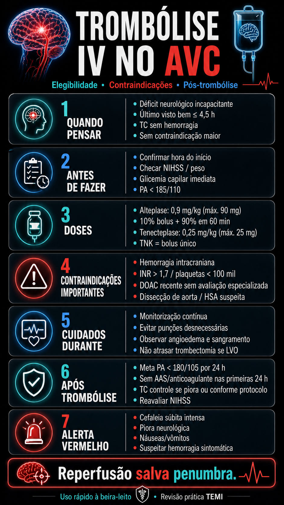

Infográficos, mapas mentais e fluxogramas recuperados para consulta rápida.

Protocolo temporal de 0 a 60 min.
Prioridades na chegada do AVC.
Medidas de 1ª e 2ª linha.
Indicações de acordo com DAWN/DEFUSE.